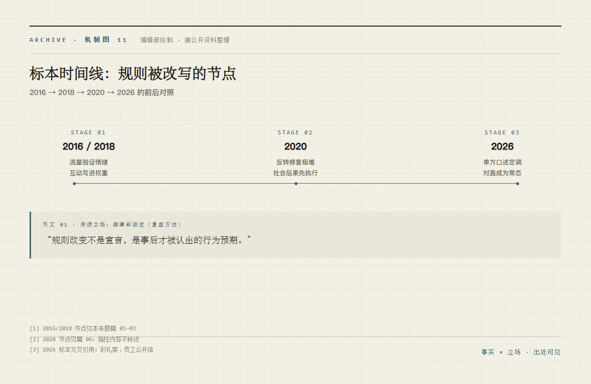

改变规则的几个瞬间
常态化观察 · 之四 · 标本复盘（上）· 只做规则前后对照，不做热点评论。
本篇与下一篇是标本复盘：挑几个改变了叙事规则的节点，逐个看「规则前 vs 规则后」。方法先说清——复盘不是追热点，是找行为预期的相变点：某件事之后，人们发帖前的算法、争论时的默认动作、自证的成本结构变了。变了，就是标本。选样的标准只有一条：必须是本专题前文已经建立过机制框架的节点，避免用孤立热点硬凑。敏感指控内容一律不转述。
2016 年 8 月的明星离婚事件（详见篇 01），在本复盘里的标本意义是：它把「情绪能换流量」从经验变成了公开数据。规则前，情绪化表达是内容的一种风格；规则后，它是内容的估值方法——同样的事实，情绪密度越高，资产价格越高。此后的每一个内容生产决策，都在这个估值方法下重算。相变点不在事件本身，在事件之后全行业的生产顺序倒置。
微博四因子排序（详见篇 02）的标本意义在于制度化。2018 年 3 月之前，「谁互动多谁占优」是观察者的经验总结，可以怀疑、可以反例；2018 年 3 月之后，它是公告，是可执行的规则。同年的「小作文」文体化（篇 03）则提供了与规则咬合的弹药：要素齐全的自述，恰好是互动率最高的内容形态。两个节点连起来看，2018 年是本专题真正的制度元年——规则与文体互相锁定，机器开始自动运转。
2020 年的单方长文指控事件（「罗冠军事件」，详见篇 06，指控内容不转述）的标本意义是：它量化了「修复成本」。事件以反转收场，但反转没有完成修复——被指控方的职业中断、搜索结果的负面沉积、社交关系的断裂，这些社会后果没有跟着反转回滚。规则前，人们以为舆论错了可以改（「澄清就好了」）；规则后，所有人看见：叙事结论是即时生效、单向执行的，而推翻它的传播权重趋近于零。这个标本教会了后来的每一个参与者两件事：指控方学到「先发定性几乎无成本」，被指控方学到「自证几乎无收益」——两边的策略都朝极端演化。这就是篇 09 说的收益表改写。
必须补一句纪律：这个标本不能被读成「所有指控都是假的」。单方陈述有真有假，本复盘取的只是传播机制：先发优势与修复成本的不对称。把机制结论偷换成事实结论，正是本专题反对的操作。
引文 01 · 来源立场：编辑部综述（复盘方法）
"规则改变不是宣言，是事后才被认出的行为预期。"
—— 本篇对「标本」的识别标准（编辑部综述）。立场：方法论视角。

▲ 图 11：标本时间线：规则被改写的节点 · 编辑部绘制。见注 [1][2][3]。
最后两个标本离现在最近，也是本工作区已经有独立文章深描过的两件事，此处只做规则层收口，不重复叙事（完整分析见《2026.11.11 · 28.8 万彩礼谈崩》与《2026.11.15 · 三十三年，输给四天》两篇）。
彩礼案的规则层意义：它是「单方口述定调」的教科书样本——直播连麦里的当事人自述先行定义了「发生了什么」，法律科普与程序视角在传播上始终是追赶者；该案的「原声实录」附页（当事人态度四阶段转变的逐字记录）反过来又提供了罕见的态度演变标本，说明叙事当事人自身也在被叙事机制推着走。员工公开信的规则层意义：146,766 个签名的分类数据（员工、前任、股东、支持者）展示了一种结构化自证的尝试——用可核对的名单对抗情绪化定性，是在对轰与沉默之外的第三种打法的雏形（下一篇展开）。
五个标本连起来，规则的演化路径就完整了：2016 验证估值 → 2018 制度定价 → 2020 暴露修复成本 → 2026 常态化对轰与结构化自证并存。下一篇（标本复盘下）换一个刀法：不按时间切，按双口径切——同一件事的两种叙事如何并存、互相强化。那是本专题方法论的第一次完整演示。
注 · SOURCES
[1] 2016.08、2018.03 节点详见本专题篇 01、02 及其注区。
[2] 2020 年事件详见篇 06；指控内容不转述、不评价；「修复成本」观察据公开报道。
[3] 2026.11 两个标本见本工作区《2026.11.11_28.8万彩礼谈崩》《2026.11.15_黄仁勋辞任与员工公开信》（含竖屏图与数据挖掘），本文只取规则层结论。
[4] 「行为预期相变点」为本复盘的识别标准（方法论概念）；五标本演化路径为编辑部归纳。
口径说明
本文为社会学观察，不站任何性别立场，作者性别不作为论证依据。标本复盘只做规则前后对照；机制结论不偷换为事实结论；敏感指控不转述。拆解机制是为了理解，不是行动指南。
出口：标本复盘的可复用处在于「认出相变」——普通读者也能用：当一个事件之后你发现自己发帖前会「先想会不会被冲」，那就是规则又改了一次。把相变说出口，规则就从环境变回议题。